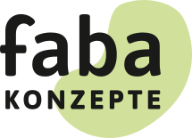
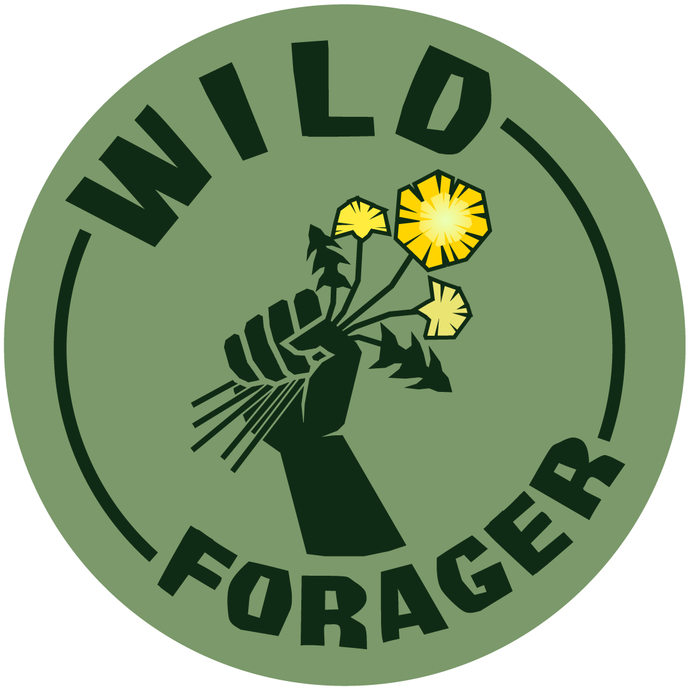
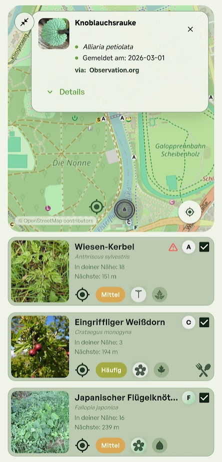
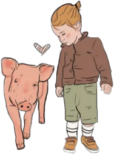
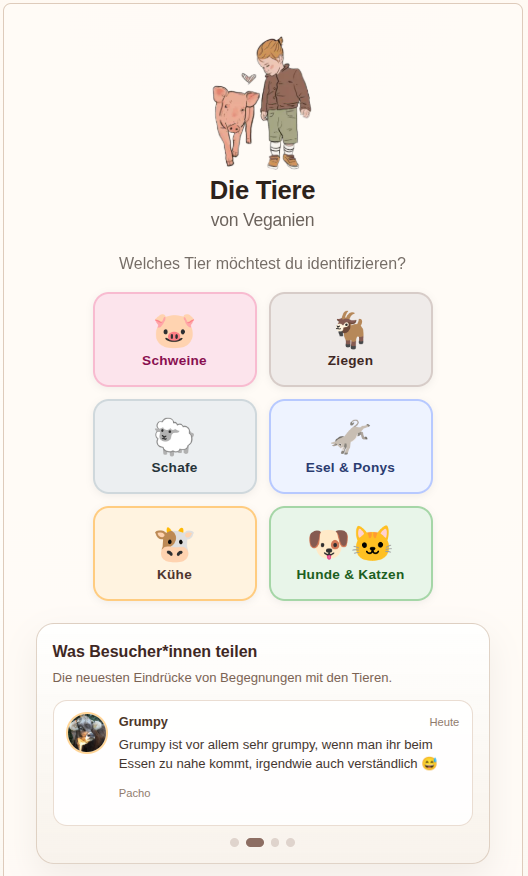
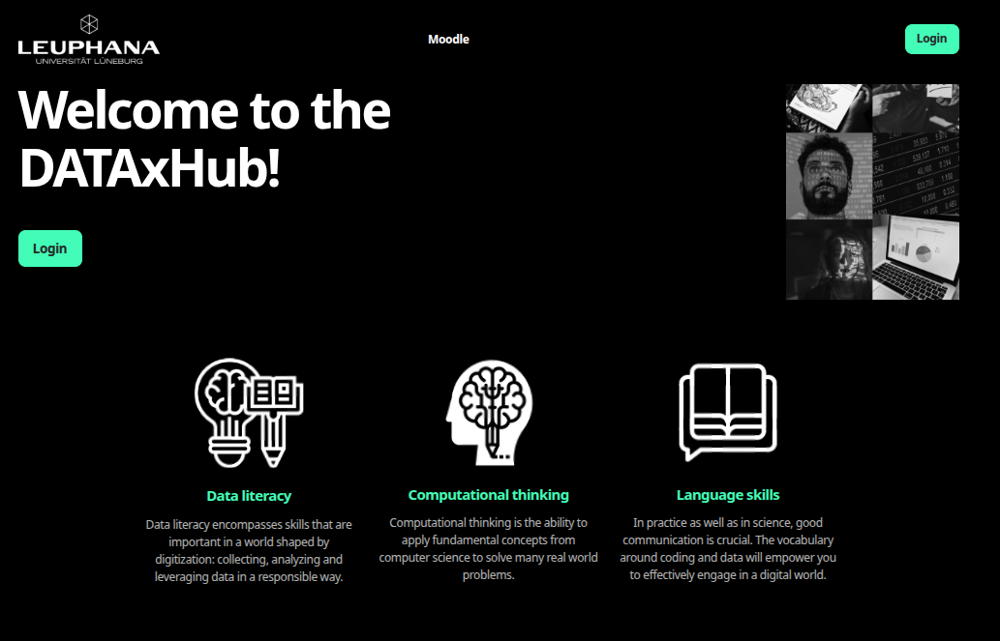
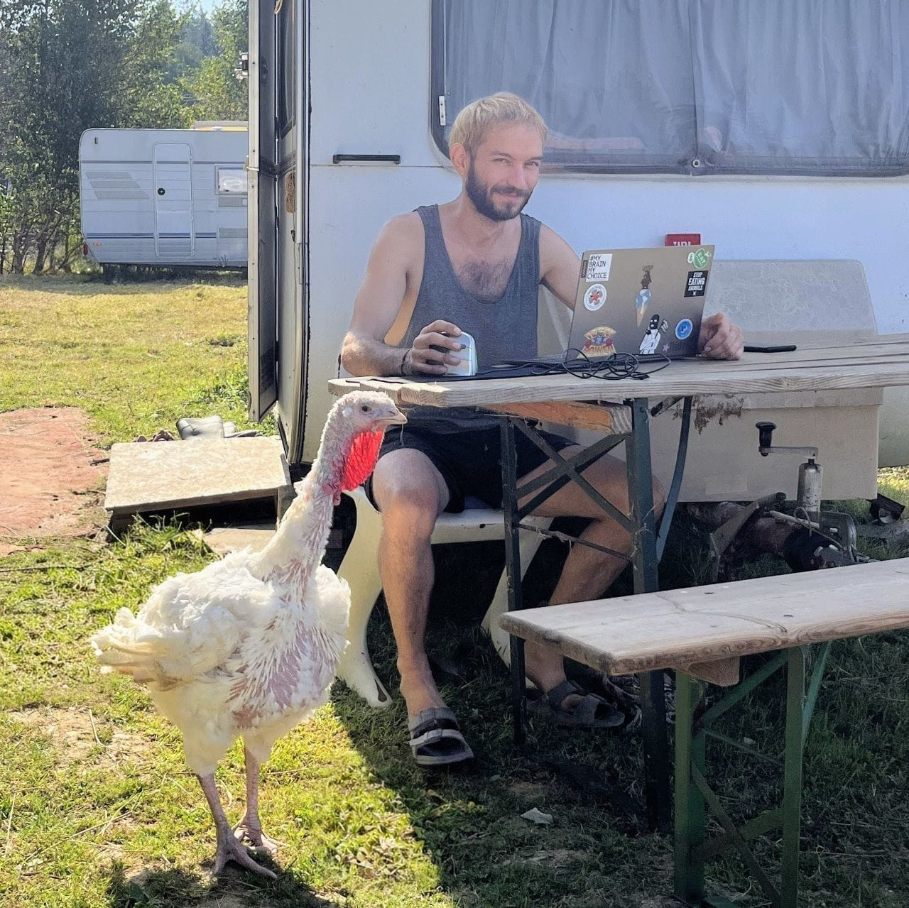

vgn-dev
I build digital tools for vegan and mission-driven projects, with a focus on education, transparency, and animal advocacy. My work includes Schlachtindustrie Deutschland, Wild Forager, and interactive projects like Tiere von Bullerbyn. I'm also closely connected to Vegan.Bullerbyn, a sanctuary that feels like a second home to me and continues to shape the kind of work I want to do: useful, thoughtful, and grounded in real care for animals.

Schlachtindustrie Deutschland
A data-driven platform bringing together public data about the slaughter industry in Germany — company structures, site information, capacities, and reports into a searchable map and database. Built the backend infrastructure and data pipeline for this project in collaboration with FABA e.V.

Mobile AppWild Forager
A mobile app for learning about edible wild plants in Germany. Combines biodiversity observations, plant profiles, seasonality, and look-alike warnings for careful, place-based learning.


Tiere von Bullerbyn
An interactive project for getting to know and identifying rescued pigs at Vegan.Bullerbyn, using visual traits and a playful decision-tree approach. Built with love for the animals.

DATAx — Leuphana University
Concept developer and tester for an interdisciplinary approach to data literacy. The project combined programming, data analysis, visualization, and ethical reflection to promote critical, responsible understanding of data across all fields of study.
DATAxHub, a JupyterHub-based learning platform, enabled over 1,200 first-semester students to work interactively with Python and data analysis directly in their browser.

What I do
Practical digital work for small to mid-size projects that need a useful tool, not performative tech theater.
Websites & landing pages
Clear, values-aligned websites for initiatives, sanctuaries, and ethical businesses.
Custom web apps
Interactive tools, maps, searchable platforms, and project-specific interfaces.
Data & automation
Data cleaning, structured databases, scraping, and practical automation pipelines.
Educational tools
Story-based interfaces, identification tools, explainers, and learning-focused digital experiences.

About
My background spans data science, concept development, and hands-on building — from university data literacy programs reaching over 1,200 students to interactive tools for animal sanctuaries.
I'm closely connected to Vegan.Bullerbyn, a sanctuary that feels like a second home to me and continues to shape the kind of work I want to do: useful, thoughtful, and grounded in real care for animals.
I use AI to manage and optimize processes across my projects — not as a shortcut, but as a tool for doing better work. AI for good: accelerating impact for causes that matter.
Let's build something useful
Working on a vegan, educational, or mission-driven project? I'd like to hear about it.